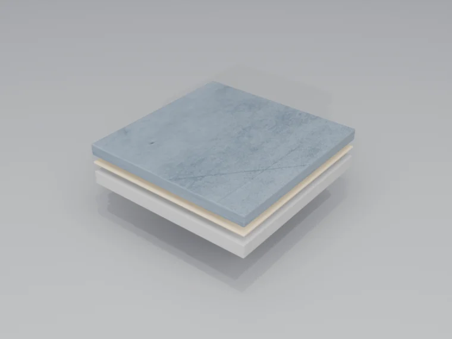

מערכות רֶזין דו-רכיביות מתוכננות לעמידות כימית מרבית, עמידות מכאנית ותברואה אטומה ללא מישקים. אמת המידה לרצפות תעשייה ומסחר ברחבי ישראל.
היכן אפוקסי מצטיין
רצפת אפוקסי מצטיינת בסביבות תעשייתיות תובעניות שבהן חשיפה כימית, תנועה כבדה ודרישות תברואה מחמירות הן הנורמה. ממפעלי ייצור ועד מתקנים פרמצבטיים, אפוקסי מספק ביצועים ללא פשרות.
מפעלי ייצור
מכונות כבדות, תנועת מלגזות, חשיפה לשמנים ונוזלי קירור. מערכות פיזור עצמי או פיזור קוורץ בעובי 3-5 מ"מ.
מחסנים ולוגיסטיקה
אזורי תנועה גבוהה, עמידות בעגלות משטחים, קווי סימון. מערכות פיזור קוורץ לעמידות.
עיבוד מזון
מערכות רֶזין הניתנות לניקוי עם אפשרות לקוב משולב. לשטיפה חמה או זעזוע תרמי, פוליאוריתן-מלט הוא בדרך כלל ההתאמה החזקה יותר.
פרמצבטיקה וחדרים נקיים
אפשרויות בקרת ESD, גימור ללא מישקים, ושכבות עליונות עמידות-כימית כשהמפרט דורש זאת.
הכנת תשתית
מערכות אפוקסי נאחזות בתשתית הן מכאנית והן כימית. הכנה נכונה אינה ניתנת למיקוח לצורך ביצועים ארוכי-טווח. הצוות שלנו מבטיח שכל משטח מוכן באופן מיטבי.
- התזת חרסיות (shot blast) — יוצרת פרופיל פני שטח מיטבי (CSP 3-5) ומסירה את שכבת הצמנט החלשה
- ליטוש יהלום — למערכות דקות יותר או היכן שהתזת חרסיות אינה אפשרית
- תיקון סדקים — סדקים מבניים ממולאים באפוקסי גמיש, סדקי שיער בפריימר חודר
- בדיקת לחות — בדיקת כלוריד סידן ומדידת לחות יחסית לפי ASTM F1869/F2170
- הסרת זיהומים — שמן, גריז וחומרי הברשה חייבים להיות מוסרים לחלוטין
ארכיטקטורת המערכת
כל התקנת אפוקסי עוקבת אחר מערכת רב-שכבתית מדויקת, כשכל רכיב מתוכנן לעבוד יחד לביצועים ולאורך-חיים מרביים.

שכבת פריימר
אפוקסי בצמיגות נמוכה חודר לנקבוביות התשתית, מאחד שכבות פני שטח חלשות, ומספק קשר כימי לשכבות הבאות. כיסוי: 0.15-0.25 ק"ג/מ"ר.
שכבת גוף / שכבת פיזור
מלט אפוקסי בפיזור עצמי או ביישום במאלג' בונה עובי. לאזורי תנועה גבוהה, אגרגט קוורץ המפוזר לתוך רֶזין רטוב יוצר שילוב מכאני ועמידות שחיקה.
שכבת איטום / שכבה עליונה
שכבה עליונה שקופה או צבועה עוטפת את האגרגט, מספקת יציבות UV (מערכות אליפטיות), וקובעת את רמת הברק הסופית ואת העמידות הכימית.
גרסאות המערכת
אנו מציעים תצורות מרובות של מערכות אפוקסי כדי להתאים לדרישות הספציפיות שלכם:
פיזור עצמי
גימור חלק ואטום ללא מישקים. עובי 2-3 מ"מ. אידיאלי לתנועה קלה-בינונית, סביבות נקיות.
פיזור קוורץ
אגרגט קוורץ צבעוני למרקם ולעמידות. 3-5 מ"מ. תנועה כבדה, אפשרויות דקורטיביות.
מערכת טיח
מערכת בעובי גבוה ביישום במאלג'. 6-12 מ"מ. עמידות קיצונית להלם ולזעזוע תרמי.
ESD/מוליך
בקרת פריקה אלקטרוסטטית. ייצור אלקטרוניקה, מרכזי נתונים, חדרי ניתוח.
יתרונות מרכזיים
- עמידות כימית — ניתנת להגדרה לשמנים, דלקים, חומרי ניקוי וחומצות/בסיסים נבחרים לאחר בחינת החשיפה הכימית.
- אטום והיגייני — ללא מישקים או קווי רובה שבהם חיידקים יכולים להתבסס. קל לניקוי ולחיטוי.
- עמידות מכאנית — חוזק לחיצה גבוה (80+ MPa), עמידות בהלם ועמידות שחיקה.
- גמישות עיצובית — אפשרויות צבע בלתי-מוגבלות, אפקטים מטאליים, מערכות פתיתים, לוגואים וסימון.
- חזרה מהירה לשירות — תנועה רגלית קלה תוך 24 שעות, עומס מכאני מלא תוך 7 ימים.
- אורך חיי שירות — תלוי בהכנת התשתית, בתנועה, בכימיקלים, במשטר הניקוי ובתחזוקה.
התאמה טובה
מחסנים, מוסכים, בתי מלאכה, אולמות תצוגה ואזורי ייצור יבשים שבהם ניתן להכין את הבטון כראוי.
לא הבחירה הראשונה
ניקוי קיטור מתמשך, זעזוע תרמי, רצפות רוויות לחות, סדקים פעילים או חשיפת UV חיצונית ללא שכבה עליונה מתאימה.
לבדוק תחילה
לחות, זיהום שמן, היאחזות ציפוי קיים, תנועת סדקים, עומס מלגזה, מרקם נדרש וחלון השבתה.
פרוטוקול תחזוקה
רצפות אפוקסי דורשות תחזוקה מועטה אך לא אפסית. פרוטוקול ניקוי פשוט מאריך משמעותית את אורך חיי השירות:
יומי
מגב אבק או מכונת שטיפה להסרת חלקיקים שוחקים. ניקוי נקודתי של נוזלים שנשפכו באופן מיידי.
שבועי
ניגוב רטוב עם חומר ניקוי בעל pH נייטרלי (מדולל). יש להימנע מחומרי ניקוי חומציים או בסיסיים.
רבעוני
ניקוי יסודי במכונת שטיפה. בדיקת נזק, במיוחד במישקים ובקצוות.
שנתי
בדיקה מקצועית. ציפוי חוזר של אזורי בלאי גבוה לפי הצורך כדי לשמור על ההגנה.